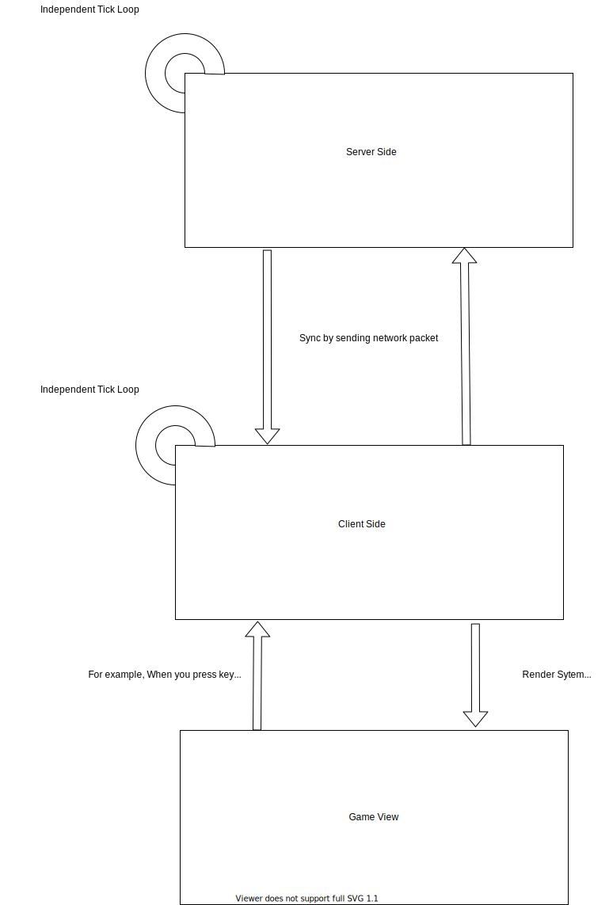

How minecraft works
This is very important section where you must build a model image of Minecraft running in your own brain, which will help you understand the concepts covered later.
In this section I'll go over how Minecraft works in general and its very important concept: the "sides".
Minecraft generally belongs to "C/S (Client/Server) Architecture". So what is "server" and what is "client"?
The name actually gives a general idea of what it means, "server" is used to provide service, and "client" is used directly by user. So how are these two sides represented in Minecraft?
Actually, there are four sides in Minecraft.
When we say “client” or “server”, it usually follows with a fairly intuitive understanding of what part of the game we’re talking about. After all, a client is what user interacts with, and a server is where user connects for a multiplayer game. Easy, right?
As it turns out, there can be some ambiguity even with two such terms. Here we disambiguate the four possible meanings of “client” and “server”:
- Physical client - Physical client is the entire program that runs whenever you launch Minecraft from the launcher. All threads, processes, and services that run during game’s graphical and interactable lifetime are part of the physical client.
- Physical server - Often known as the dedicated server, physical server is the entire program that runs whenever you launch any sort of
minecraft_server.jarthat does not bring up a playable GUI.- Logical server - Logical server is what runs game logic: mob spawning, weather, updating inventories, health, AI, and all other game mechanics. The logical server is present within the physical server, but is also can run inside a physical client together with a logical client, as a single player world. Logical server always runs in a thread named the
Server Thread.- Logical client - Logical client is what accepts input from player and relays it to logical server. In addition, it also receives information from logical server and makes it available graphically to player. Logical client runs in the
Client Thread, though often several other threads are spawned to handle things like audio and chunk render batching.In the Minecraft codebase, physical side is represented by an enum called
Dist, while logical side is represented by an enum calledLogicalSide.
It's worth noting that the distinction between client and server here is only logical. In fact if you are in single player mode, there will be both a server and a client on your computer, and they are in different threads1. But when you connect to a server, only the client exists on your computer and the server is moved to a remote server.
The following diagram roughly explains how Minecraft works.

When you see this picture, you may wonder why client has a data model when server is responsible for the game logic. In fact, "client-side data model" here is just a copy of "server-side data model", although they have separate game ticks and share a lot of the same code, but final logic is still server-side.
As we mentioned before, client and server are independent, but they inevitably need to synchronize data, and in Minecraft, all client and server data synchronization is done through network packets. In most of the cases, the original version has already implemented a method to synchronize the data, we just need to call the method that has already been implemented, but in some cases, the original version does not implement the corresponding function, or it is not suitable to use the function provided by the original version, we have to create and send network packets to complete data synchronization.
So the next question is, how do we distinguish in our code whether we are on the client side or the server side?
world.isRemoteThis boolean check will be your most used way to check sides. Querying this field on a
Worldobject establishes logical side world belongs to. That is, if this field istrue, world is currently running on logical client. If the field isfalse, world is running on logical server. It follows that physical server will always containfalsein this field, but we cannot assume thatfalseimplies a physical server, since this field can also befalsefor logical server inside a physical client (in other words, a single player world).Use this check whenever you need to determine if game logic and other mechanics should be run. For example, if you want to damage the player every time they click your block, or have your machine process dirt into diamonds, you should only do so after ensuring
world.isRemoteisfalse. Applying game logic to logical client can cause desynchronization (ghost entities, desynchronized stats, etc.) in the lightest case and crashes in the worst case.This check should be used as your go-to default. Aside from
DistExecutor, rarely will you need other ways of determining side and adjusting behavior.
DistExecutorConsidering the use of a single “universal” jar for client and server mods, and separation of physical sides into two jars, an important question comes to mind: How do we use code that is only present on one's physical side? All code in
net.minecraft.clientis only present on physical client, and all code innet.minecraft.server.dedicatedis only present on physical server. If any class you write references those names in any way, they will crash the game when that respective class is loaded in an environment where those names doesn't exist. A very common mistake in beginners is to callMinecraft.getMinecraft().<doStuff>()in block or tile entity classes, which will crash any physical server as soon as the class is loaded.How do we resolve this? Luckily, FML has
DistExecutor, which provides various methods to run different methods on different physical sides, or a single method only on one side.Note
It is important to understand that FML checks based on the physical side. A single player world (logical server + logical client within a physical client) will always use
Dist.CLIENT!Thread Groups
If
Thread.currentThread().getThreadGroup() == SidedThreadGroups.SERVERis true, it is likely that current thread is on logical server. Otherwise, it is likely on logical client. This is useful to retrieve logical side when you do not have access to aWorldobject to checkisRemote. It guesses which logical side you are on by looking at group of currently running threads. Because it is a guess, this method should only be used when there's no other options. But in nearly every case, you should prefer checkingworld.isRemoteto this check.
FMLEnvironment.distand@OnlyIn
FMLEnvironment.distholds physical side your code is running on. Since it is determined at startup, it doesn't rely on guessing to return its result. However, number of its use cases is limited.Annotating a method or field with the
@OnlyIn(Dist)annotation indicates to loader that the respective member should be completely stripped out of the definition not on specified physical side. Usually, these are only seen when browsing through decompiled Minecraft code, indicating methods that Mojang obfuscator has stripped out. There is little to no reason for using this annotation directly. Only use it if you are overriding a vanilla method that already has@OnlyIndefined. In most of other cases where you need to dispatch behavior based on physical sides, useDistExecutoror check onFMLEnvironment.distinstead.
Thread is one of the units of program scheduling, being in different threads means that the logic and data of these two are independent of each other and can only be synchronized by specific methods. Specifically, server is in "Server thread" and client is in "Render thread", if you've ever watched output log when Minecraft starts, you should see these two words.